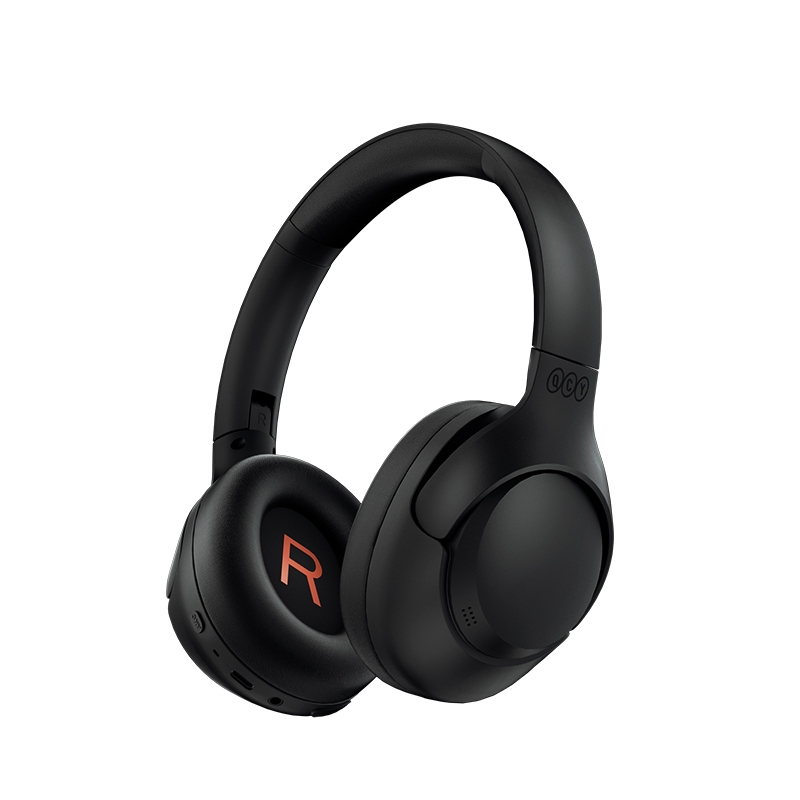
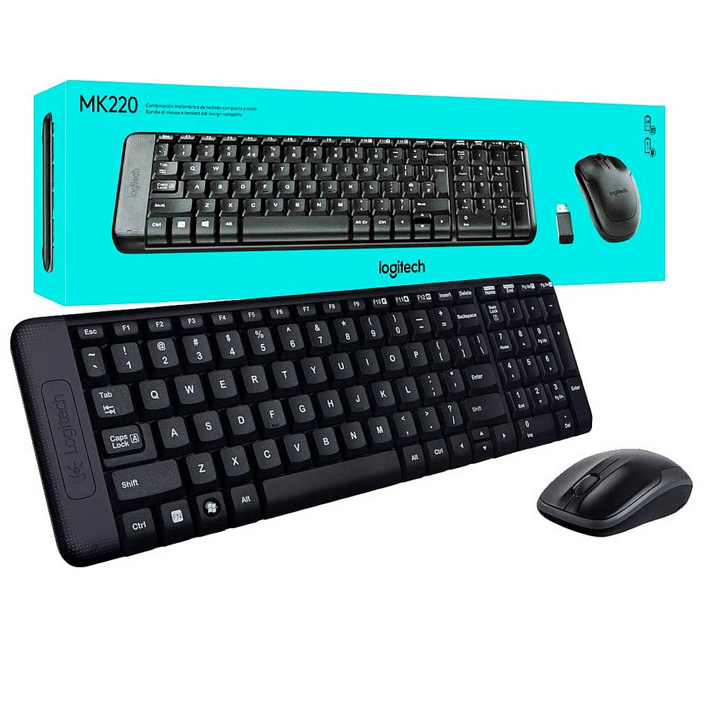
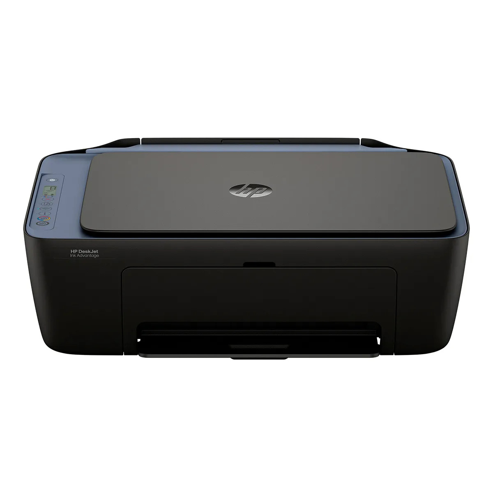

Fones de Ouvido Bluetooth QCY H3 Preto
O QCY H3 ANC é um headphone over-ear sem fio de excelente custo-benefício. Ele destaca-se pelo Cancelamento Ativo de Ruído (ANC) adaptativo de até 43 dB, drivers dinâmicos de 40 mm com revestimento de titânio (certificação Hi-Res no modo com fio) e bateria com autonomia impressionante de até 60 horas.
Preço: R$ 249,90

Combo Teclado e Mouse sem fio Logitech MK220
O Combo Teclado e Mouse sem fio Logitech MK220 destaca-se pelo design compacto (teclado 36% menor que o padrão, mas com layout ABNT2 completo e teclado numérico), conexão sem fio de 2,4 GHz com alcance de até 10 metros, e longa autonomia de pilhas (até 24 meses para o teclado).
Preço: R$ 199,90

Impressora Multifuncional HP DeskJet Ink Advantage 2975
A Impressora Multifuncional HP DeskJet Ink Advantage 2975 é um modelo 3 em 1 (imprime, copia e digitaliza) voltado para uso doméstico, estudantes e home office. Possui design compacto, conectividade Wi-Fi de banda dupla com autorrecuperação e suporte a impressão via celular pelo aplicativo HP Smart.
Preço: R$ 485,50